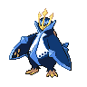
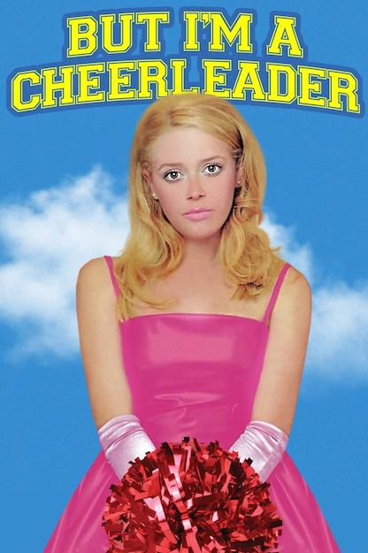
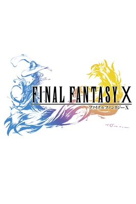
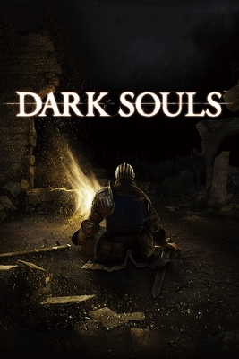
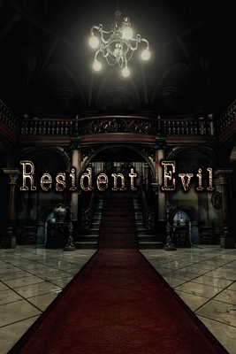

Things About Me
Names: Dan, Jeco, dangus
Pronouns: he/him/his
Age: 24 years old
Identities:


Final Fantasy Job:

DND Class:

Favorite Color: Aqua Blue
Handedness: Left-handed
Favorite Planets: Saturn & Earth
Favorite Seasons: Summer & Fall
Things I want to learn right now: knitting colorwork, knitting lace, playing the guitar & drums, ham radio (in turn, a lot of electronics!), astronomy/using telescopes, getting better at Tagalog
My Favorite Pokemon



My Letterboxd Top 4



For one reason or another, these movies really resonated with me.
Common themes I enjoy are surrealist/dreamlike aesthetics & imagery, movies that focus on queer stories and characters, and movies that can make me cry.
Here's the rest of my Letterboxd if you want to see my really really bad reviews (it's mostly just quotes I liked from the movie or if there was a hot actor I liked :P).
My Favorite Games






Video games have always been a huge part of my life. I enjoy playing them for the stories but also the mastery of getting good at playing them.
I've got a ton more games that I like but I think these are my
all-time favorite
games. These are the ones that I keep coming back
to or have made a significant
impact on my worldview & values.
My favorite genre of video game are definitely RPGs (of all
kinds!) but I have
also come to enjoy survival horror a lot as well. I'm not very good at them but I love
fighting games too!
100 Questions For Webmasters
Made by Mouseling
I will fill this out eventually
Click To Expand
- 1. Please introduce yourself.
- 2. How long have you been making websites?
- 3. And what got you into the hobby?
- 4. What kind of website are you most interested in?
- 5. What's your workflow? Do you plan your websites out thoroughly or do you come up with the design as you go along?
- 6. Please link to your biggest inspirations.
- 7. What's your favourite part about making websites?
- 8. And the thing you struggle with the most?
- 9. Do you keep the same layout on all of your pages? Or do you use different ones?
- 10. How confident are you with CSS?
- 11. Do you know how to correctly use <dl>?
- 12. What is your favourite HTML element?
- 13. If you're making a new web page from scratch, what is the first thing you do?
- 14. Do you know JavaScript?
- 15. How about PHP?
- 16. Does your website have a theme that you stick to?
- 17. Are you more focused on content or design?
- 18. Do you own a domain name? If not, would you ever want to?
- 19. What do you think of nostalgia-focused or "retro" websites?
- 20. Is your HTML valid? Do you even check?
- 21. What are your opinion on buttons and banners?
- 22. What do you think of button walls in particular?
- 23. If you started over again, would you make something similar or completely different?
- 24. Are you envious of other people's websites?
- 25. What text editor do you use?
- 26. Why do you use that one?
- 27. Do you host your image files on your web server, or on another host?
- 28. This might not be relevant to you, but what's your opinion on the Neocities vs. Nekoweb debate?
- 29. How much server space would you estimate your main website takes up?
- 30. Do you keep local backups of your files?
- 31. Do you prefer simple or highly visual websites?
- 32. Do you stick to certain colours? Do you do that on purpose, or is it your subconscious?
- 33. Have you ever thought about quitting? Why?
- 34. Do you have many webmaster friends, or is it a solitary hobby?
- 35. Do people in your real life know about your website?
- 36. Do you update your website very often? How often is "very often"?
- 37. And the overall design, do you change that much? Why or why not?
- 38. Is your website more you-focused, hobby-focused, or outside world-focused?
- 39. Do you do web design professionally?
- 40. If not, would you like to? And if you're comfortable answering, what do you do for work?
- 41. Do you communicate with people by email very much?
- 42. Some people reject social media and use websites as a replacement. Do you keep social media outside of your website?
- 43. How about instant messengers? Do you use a mainstream one like Discord or Telegram? Or something like Matrix? Do you avoid them?
- 44. Do you listen to music while you work on websites? If so, what kinds of artists?
- 45. Do you keep everything you make on one website, or do you have more than one?
- 46. On a similar note, do you keep to one topic on your site, or many?
- 47. Do you present your real self, or at least try? Or do you construct a persona on purpose?
- 48. Have you ever made a good friend thanks to your website?
- 49. Are you happy with the way HTML and CSS currently work?
- 50. What are practices that you think people should avoid?
- 51. What about under-utilised practices, or things you think people should do more?
- 52. Do you use a lot of semantic HTML? Or are you guilty of generic structure?
- 53. Do you consider different browsers?
- 54. Speaking of, what's your preferred browser? Convince your readers why they should use it.
- 55. And what OS are you on?
- 56. Do you have a strong opinion on that, or do you just happen to use it?
- 57. Are your websites mobile-friendly?
- 58. What are your thoughts on autoplay?
- 59. What are your thoughts on webrings? Are you in any?
- 60. Do you have any web shrines? What do you like to see in that sort of page?
- 61. Are your websites "cliche", in your opinion?
- 62. What is your ideal website? Are you striving for that, or for something else?
- 63. Are you an artist? Do you draw or design your own assets?
- 64. What are your favourite resource sites?
- 65. Is there a habit you just can't get away from no matter how hard you try?
- 66. What's your biggest advice for a new webmaster?
- 67. Do you keep all your styling in CSS? Or do you hard-code some?
- 68. What do you think of frameset layouts?
- 69. How about table-based layouts?
- 70. Do you subscribe to the ideas of "one-column", "two-column" and "three-column" layouts? Do you use any of these?
- 71. Do you spend longer on the HTML or the CSS?
- 72. Have you ever made a page with no CSS? It's useful for your thoughts.
- 73. Do you ever find yourself making layouts with nothing to put on them? Or do you only make layouts when the need arises?
- 74. Would you consider yourself a beginner? Or advanced? Somewhere in the middle?
- 75. Do you have a habit of looking at the source code of websites you visit?
- 76. How did YOU learn how to make websites?
- 77. Do you ever force elements to do things they're not supposed to?
- 78. Thoughts on floating elements?
- 79. When you're sizing stuff, what do you use first? Do you use px, em, %, or something else?
- 80. Do you have a favourite font?
- 81. Would you run a website with another person? How would that work?
- 82. Do you surf the Web to find new personal websites very often?
- 83. Do you bookmark other people's websites? How would you feel knowing someone else bookmarked yours?
- 84. What do you want people to be most impressed with when they see your website?
- 85. Are you interested in technology outside of websites? Do you collect?
- 86. How often and for how long are you online?
- 87. When it comes to your website, who is your target audience?
- 88. Have you ever been interested in XHTML?
- 89. Do you program in general? Have you ever written a program for use with or on your website, not counting simple JavaScript?
- 90. Speaking of programs that help you make websites, what do you think of static site generators (SSGs)? Have you ever used one?
- 91. Do you keep a hitcounter? Why or why not?
- 92. Do you frequent forums? Which ones?
- 93. Do you write your page content directly into the editor, or do you prepare it elsewhere, like a text document or a Word document?
- 94. Do you think you appear cool to others? A more accurate answer now: do other people ever say you're cool?
- 95. Are you embarrassed of your old work? Have you ever deleted everything out of shame?
- 96. Would you close down your website if you couldn't update it, or would you leave an archive?
- 97. Do you reveal a lot about yourself on your website? Or are you more secretive?
- 98. Are you willing to reveal who your best online friend is, and/or if they have a website?
- 99. And do you optimise the images on your website?
- 100. We're out of time! How do you feel after answering 100 questions? ....other than exhausted.
Hello! My name is Dan or dangus in online spaces. Welcome to my website!


My interests are video games (mainly rpgs), museums, music, ttrpgs + board games, politics, biology, space, philosophy, geography, history, art, and lots more things!


I made this website as a personal project. I want my own space on the internet that I can call my own without any of the hangups of using/relying on social media. I want to feel free to express my own views and post my own content as I want it to be. I also enjoy the challenge of learning HTML and CSS; I hope to improve my webdev skills as I continue working on this website.
I love to learn and I love when people talk my ear off about their passions! Please share what interests you with me! I find myself wanting to learn everything but not having enough time to really get deep into a subject!